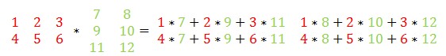
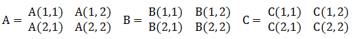

Matriks adalah susunan sekelompok bilangan dalam suatu jajaran berbentuk persegi ataupun persegi panjang yang diatur berdasarkan baris dan kolom.
Matriks mempunyai aplikasi dalam kehidupan sehari-hari, yaitu : program linear, analisis permasalahan di bidang ekonomi, menghitung rotasi matriks, dan sebagainya.
Perkalian matriks adalah suatu operasi dari dua matriks. Syarat agar 2 matriks tersebut dapat dikalikan adalah jumlah kolom matriks pertama harus sama dengan jumlah baris matriks kedua.
Proses perkalian matriks adalah dengan memasangkan baris pada matriks pertama dengan kolom pd matriks kedua dan menjumlahkan semua perkalian dimulai dari kolom pertama matriks pertama dikali dengan baris pertama matriks kedua sampai dengan kolom terakhir matriks pertama dikali dengan baris terakhir matriks kedua.
Sebagai contoh:
Sebagai operasi dasar dari matriks, maka perkalian matriks cukup banyak dipakai dalam kehidupan nyata. Karena cukup banyak yang menggunakan perkalian matriks, maka ilmuwan di bidang matematika dan komputer berusaha mencari algoritma perkalian matriks yang seefisien mungkin. Apabila perkalian matriks diimplementasikan seperti pada contoh, maka kompleksitas algoritmanya adalah O(n3). Namun telah ditemukan beberapa algoritma perkalian matriks yang lebih efisien, salah satunya adalah algoritma Strassen.
Ide dari algoritma Strassen adalah mengurangi jumlah perkalian yang berjumlah n3 menjadi n2log7 untuk matriks berukuran n x n. Dengan begitu, maka kompleksitas perkalian matriks yang O(n3) dapat diperkecil menjadi O(n2log7)=O(n2.807). Cara membuat perkalian matriks tersebut sehingga cukup menjadi 7 adalah sebagai berikut :
Untuk dua matriks berukuran 2n x 2n, dengan C adalah hasil dari perkalian 2 matriks tersebut.
C(1,1) = A(1,1)*B(1,1) + A(1,2) *B(2,1)
C(1,2) = A(1,1)*B(1,2) + A(1,2) *B(2,2)
C(2,1) = A(2,1)*B(1,1) + A(2,2) *B(2,1)
C(2,2) = A(2,1)*B(1,2) + A(2,2) *B(2,2)
Dengan A(i,j),B(i,j),C(i,j) adalah matriks berukuran n-1 dari matriks A, B, C
Untuk mengurangi perkalian dari 8 menjadi 7, dibuatlah perkalian baru yang berasal dari elemen-elemen pada matriks A dan matriks B. Tujuh perkalian baru tersebut nantinya dapat membentuk matriks C. Perkalian-perkalian tersebut adalah:
M1 = (A(1,1) * B(1,1))+(A(1,2)*(B(2,1))
M2 = (A(1,1) * B(1,1)) * B(1,1)
M3 = A(1,1) * (B(1,2)-B(2,2))
M4 = A(2,2) * (B(2,1) - B(1,1))
M5 = (A(1,1) + A(1,2)) * B(2,2)
M6 = (A(2,1) - A(1,1)) * (B(1,1) + B(1,2))
M7 = (A(1,2) - A(2,2)) * (B(2,1) + B(2,2))
Dengan M1 sampai M7 kita dapat mendefinisikan C(1,1), C(1,2), C(2,1), C(2,2), yaitu:
C(1,1) = M1 + M4 - M5 + M7
C(1,2) = M3 + M5
C(2,1) = M2 + M4
C(2,2) = M1 - M2 + M3 + M6
Walaupun mungkin penurunan kompleksitas algoritma dari algoritma biasa dengan algoritma Strassen, akan tetapai akan sangat berpengaruh apabila matriksnya berukuran besar. Sebagai contoh : Apabila matriks berukuran 1024*1024, dengan algoritma biasa, dibutuhkan 10243 = 1.073.741.824 kali penghitungan. Akan tetapi, apabila dengan dengan algoritma Strassen, dibutuhkan 10242,807 = 281.781.177 kali penghitungan, menciptakan perbedaan yang cukup jauh dibandingkan algoritma biasa.
Referensi :